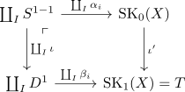
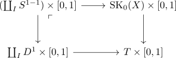

classification of one dimensional CW Complexes up to homotopy
Proposition
Let $(X, \emptyset, \mathrm{SK}_n(X))$ be a \(1\)-dimensional CW-Complex. Then $X$ is homotopy equivalent to
Proof
w.l.o.g. for a connected space:
Choose a Spanning Tree $T$ as CW subcomplex (cf. existence of a spanning tree, one dimensional cw complex and multigraph)
Let $0$ be a root of $T$. For each Vertex $v$, there exists a welldefined distance to the root.
It is contractible:
By construction, $T$ is a pushout

By product functor of topological spaces for a locally compact space as left adjoint, since left adjoint preserves colimits, we conclude, that

Therefore, it suffices to define a family of homotopies
which are compatible
Pick an edge $e_\alpha \subseteq T$. and let $s_{\alpha}$ respectively $t_{\alpha}$ be the source (resp. target) of $e_{\alpha}$, where $D^1_{\alpha}$ is oriented from $0$ to $1$
By tree and unique path, choose the unique path
connecting $s_\alpha$ (resp. $\tau_\alpha$ to $v_0$
Define $h_{\alpha}$ on
by
By compactness, $h_{\alpha}(\partial (D^1_\alpha \times [0,1])$ lies in a finite subtree of $T$
since (finite) trees are contractible, $h_{\alpha}$ is nullhomotopic
choosing a null homotopy gives us an extension of $h_{\alpha}$ over the Cone
By construction, those $h_{\alpha}$ give us a homotopy $h$ as desired
by CW Pair as cofibration, we conclude that the following map
is a cofibration
Hence by cofibration from a contractible space induces homotopy equivalence to the collapse, we conclude, that